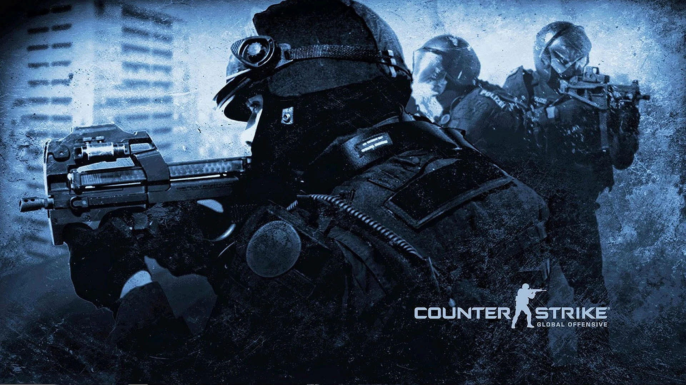

[2017 Dedicated Server Portal]

This website acts as an active FastDL repository for the server. When you connect, the game will automatically download all custom maps (like de_resort), models, and assets from here at maximum speed.
> FastDL configuration line for server.cfg:
sv_downloadurl "https://your-username.github.io/fastdl/csgo/"
This project was created out of pure retro nostalgia for players who want to experience Counter-Strike exactly how it was back in 2017 – without unnecessary modern updates, featuring the classic engine, SourceMod plugins, and fully functional RTV map voting system.
Brought to you by the community. Have fun! 🦾